In this practical, we examine how variations in rainfall intensity and frequency affect soil loss potential as modelled by the Revised Universal Soil Loss Equation (RUSLE). We evaluate the sensitivity of soil erosion estimates derived from RUSLE in Australia to rainfall variability by comparing scenarios from a wetter-than-average year (2011) and a drier-than-average year (2019). This approach allows us to investigate how climatic variability may influence soil erosion potential.
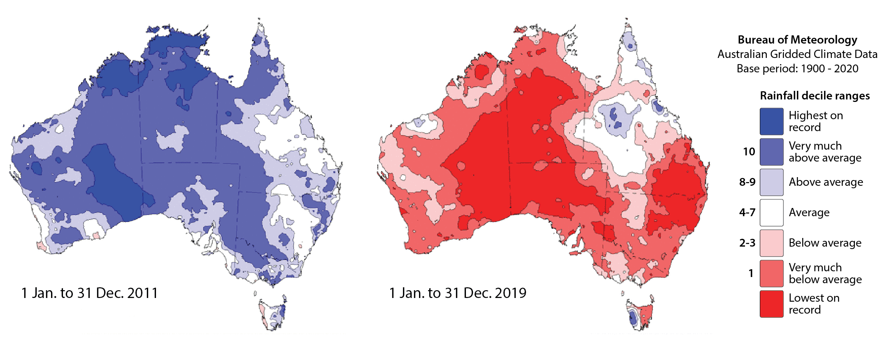
Fig. 1: Australian rainfall deciles for 2011 and 2019.
RUSLE is an empirically based model developed to estimate long-term average annual soil loss due to water erosion. It builds on the earlier Universal Soil Loss Equation (USLE) by refining the methodologies used to assess the effects of rainfall, soil characteristics, topography, land cover, and conservation practices. RUSLE integrates five principal factors:
Among the factors listed above, the soil erodibility (K) and support practices (P) factors remain constant over time — that is, they do not vary seasonally or annually — and are challenging to estimate without field or laboratory data. Consequently, raster data for the K- and P-factors have been obtained from a recent CSIRO-led study by Hongfen Teng and colleagues. In contrast, the rainfall erosivity (R), slope length and steepness (LS), and cover and management (C) factors will be derived from publicly available data as part of this practical exercise.
R packages
The practical will utilise R functions from packages explored in previous sessions:
Spatial data manipulation and analysis:
The sf package: provides a standardised framework for handling spatial vector data in R based on the simple features standard (OGC). It enables users to easily work with points, lines, and polygons by integrating robust geospatial libraries such as GDAL, GEOS, and PROJ.
The terra package: is designed for efficient spatial data analysis, with a particular emphasis on raster data processing and vector data support. As a modern successor to the raster package, it utilises improved performance through C++ implementations to manage large datasets and offers a suite of functions for data import, manipulation, and analysis.
The whitebox package: is an R frontend for WhiteboxTools, an advanced geospatial data analysis platform developed at the University of Guelph. It provides an interface for performing a wide range of GIS, remote sensing, hydrological, terrain, and LiDAR data processing operations directly from R.
Data wrangling:
Data visualisation:
Resources
RUSLE estimates average annual soil loss (in tonnes per hectare per year, t ha⁻¹ yr⁻¹) caused by sheet and rill erosion using the following empirical equation:
\[A = R \times K \times LS \times C \times P\]
where:
The units of \(R\) and \(K\) are chosen such that their product with \(LS\), \(C\), \(P\) yields soil loss in the desired units. In standard SI unit conventions, \(R\) is given in units of energy times rainfall (e.g., MJ·mm·ha⁻¹·h⁻¹·yr⁻¹), and \(K\) in units of soil loss per erosivity (e.g., t·ha·h·ha⁻¹·MJ⁻¹·mm⁻¹), so that the product \(R \times K\) has units of t ha⁻¹ yr⁻¹.
In RUSLE, these factors are typically evaluated on an annual average basis, although RUSLE can be applied in a monthly or storm-wise mode if needed.
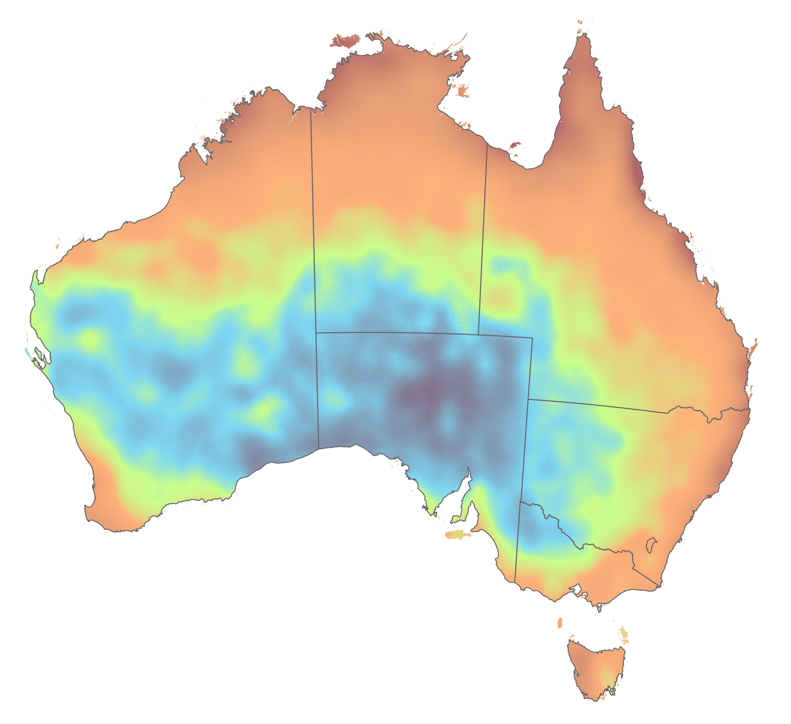
The rainfall erosivity factor represents the erosive potential of rainfall, based on raindrop impact energy and associated runoff rates. It is calculated from rainfall intensity and duration data and requires rainfall intensity data at high temporal resolution or derived relationships from annual or monthly rainfall data.
In this practical we will calculate rainfall erosivity using daily rainfall data obtained from the Australian Bureau of Meteorology (BOM) following the approach proposed by Hua Lu and Bofu Yu and published in CSIRO’s Australian Journal of Soil Research:
\[R = \sum^{n=12}_{i=1}R_{i}\]
where \(R\) is the rainfall erosivity factor calculated for a period of 12 months and \(R_{i}\) is the rainfall erosivity factor calculated for each month. \(R_{i}\) is calculated as:
\[R_{i} = \alpha \times \left[1+\eta \times \cos(2\pi \times f_i - \pi/6)\right] \times \sum^{N}_{d=1} R^{\beta}_{d} ~~~~~\text{when}~~~~~ R_{d} > R_{0}\]
where:
The USLE handbook by Wischmeier and Smith recommends a value for \(R_{0}\) of 12.7 mm. For simplicity, here we will adopt a value of 0 mm for \(R_{0}\) which means that we do not need to filter our daily rainfall data before calculating \(R_{i}\). The Lu and Yu study calculated \(R_{i}\) using both \(R_{0} = 12.7\) and \(R_{0} = 0\) and found no significant differences, thereby justifying our choice for \(R_{0}\).
The constant \(\alpha\) is spatially variable and is calculated using the following equation:
\[\alpha = 0.369 \times \left[1 + 0.098 \times \exp\left(3.26 \times \frac{M_{OCT-APR}}{M_{YEAR}}\right)\right]\] where \(M_{OCT-APR}\) and \(M_{YEAR}\) are the mean summer (October to April) and mean annual rainfall, respectively, calculated for the period 1991 to 2020. This time period is used by the BOM to calculate average climatic conditions for Australia (i.e., the baseline climate).
The constants \(\beta\) (=1.49) and \(\eta\) (=0.29) were empirically derived for Australian climatic conditions. The model parameter \(f_{i}\) is used to describe the seasonal variability of rainfall erosivity and has a different value for each month of the year:
Jan | Feb | Mar | Apr | May | Jun | Jul | Aug | Sep | Oct | Nov | Dec |
|---|---|---|---|---|---|---|---|---|---|---|---|
0.08 | 0.17 | 0.25 | 0.33 | 0.42 | 0.50 | 0.58 | 0.67 | 0.75 | 0.83 | 0.92 | 1.00 |
Using the values from Table 1 above and \(\eta = 0.29\), the expression \(1+\eta \times \cos(2\pi \times f_i - \pi/6)\) can be readily calculated for each month and is given in the table below:
Jan | Feb | Mar | Apr | May | Jun | Jul | Aug | Sep | Oct | Nov | Dec |
|---|---|---|---|---|---|---|---|---|---|---|---|
1.290 | 1.251 | 1.145 | 1.000 | 0.855 | 0.749 | 0.710 | 0.749 | 0.855 | 1.000 | 1.145 | 1.251 |
Essentially, the values in Table 2 represent the weights assigned to each month, with higher weights for summer months and lower weights for winter months in the calculation of \(R_{i}\).
Using the values provided in Table 2, the \(R_{i}\) equation simplifies to:
\[R_{i} = \alpha \times W_{i} \times \sum^{N}_{d=1} R^{\beta}_{d}\]
where \(W_{i}\) is the weight from Table 2 for month \(i\).
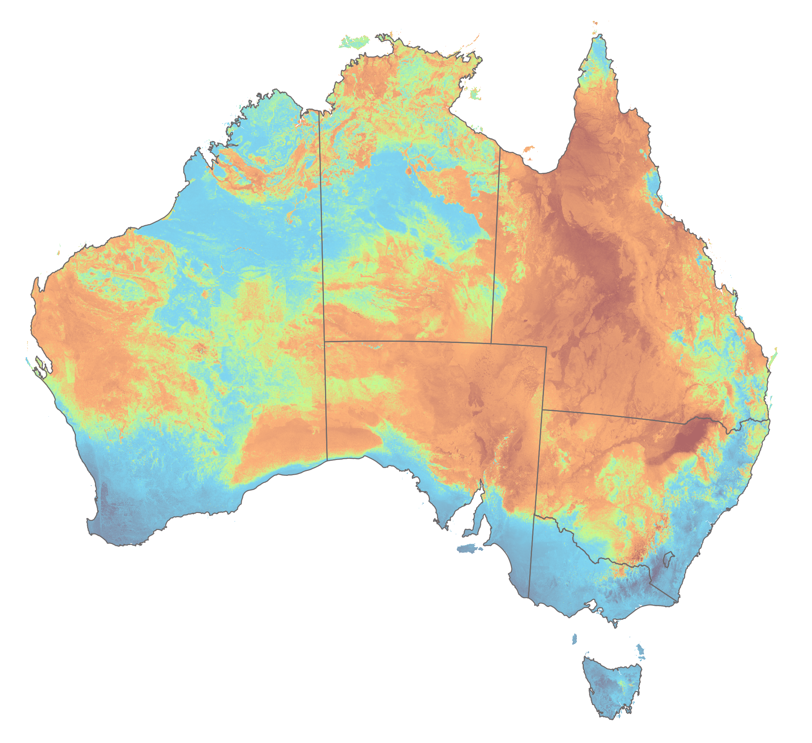
The soil erodibility factor expresses the soil’s inherent susceptibility to erosion, influenced by soil properties such as texture, structure, organic matter content, and permeability. \(K\) is usually determined experimentally or estimated using soil properties with the widely-used nomograph equation from the USLE handbook:
\[ K = 0.00021 \times M^{1.14} \times (12 - \Omega) + 3.25 \times (s - 2) + 2.5 \times (p-3) / 100\]
where:
Several formulations of the above equation exist depending on regional calibration and available soil data. Values for \(K\) typically range from around 0.01 (low erodibility) to over 0.05 (high erodibility).
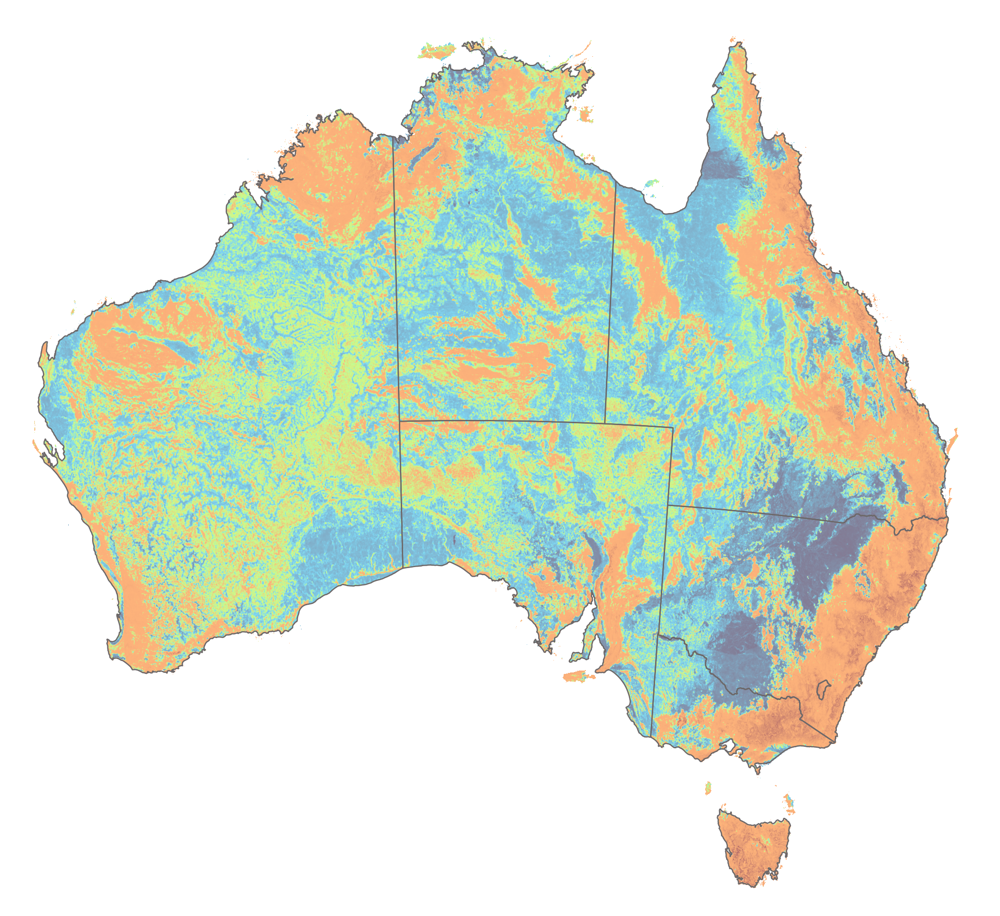
The combined topographic factor (\(LS\)) accounts for the effect of slope length (\(L\)) and slope gradient or steepness (\(S\)) on erosion. Longer and steeper slopes promote more soil loss: a longer slope allows runoff to accumulate, increasing its erosive power, and a steeper slope causes faster flow and greater shear force on the soil.
When derived from a digital elevation model (DEM), slope length is replaced by the specific upslope contributing area, which accounts for flow convergence and divergence. This substitution enables the RUSLE model to be applied not only to areas experiencing net erosion but also to complex terrain including both erosional and depositional domains. \(LS\) is calculated using the following equation:
\[LS = \left(\frac{A}{22.13}\right)^m \times \left(\frac{\sin \beta}{0.0896}\right)^n\]
where:
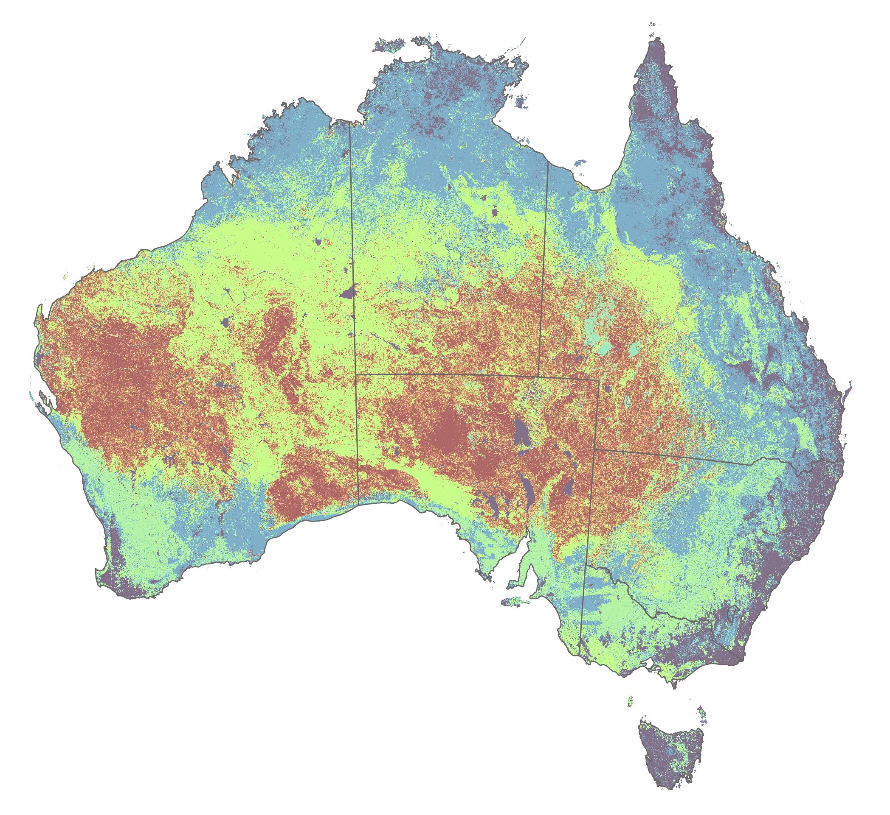
The cover and management factor, represents the effect of vegetation, crop cover, and land management practices on soil erosion rates. \(C\) is defined as the ratio of soil loss from land under a given crop/management to the corresponding loss from continuously bare soil (the unit plot), over the same period. Essentially, \(C = 1.0\) for barren land, and \(C < 1.0\) for soils protected by vegetation or residues; the better the cover, the lower the \(C\) value and the less erosion.
Satellite remote sensing offers a versatile and efficient means of deriving the RUSLE cover and management factor by providing data on vegetation cover and dynamics over extensive areas
Sensors onboard satellites such as Landsat, MODIS (Moderate Resolution Imaging Spectroradiometer), and Sentinel-2 capture data across multiple spectral bands, which can be used to calculate vegetation indices like the Normalised Difference Vegetation Index (NDVI) and the Enhanced Vegetation Index (EVI). These indices serve as proxies for canopy density, vegetation health, and biomass, thereby quantifying vegetation’s protective effect against soil erosion.
Additionally, many satellite missions offer frequent revisit times, ranging from daily to weekly, facilitating the monitoring of seasonal changes in vegetation cover. This temporal capability is crucial for capturing the dynamic nature of agricultural practices and natural vegetation cycles, which directly affect the cover and management factor. Furthermore, satellite platforms provide data at various spatial resolutions, from MODIS’s coarse resolution — ideal for broad regional assessments — to the finer resolution imagery of Sentinel-2 and Landsat, capable of capturing more detailed variations in land cover. This range in resolution enables users to select datasets most appropriate for their study areas, balancing comprehensive spatial coverage with sufficient detail.
In Australia, \(C\) has been computed using time-series fractional vegetation cover data derived from MODIS satellite imagery using the following equation:
\[C = \sum^{n=12}_{i=1}C_{i}\]
where \(C\) is the cover and management factor calculated for a period of 12 months and \(C_{i}\) is the cover and management factor calculated for each month. \(C_{i}\) is calculated as:
\[C_{i} = \exp(-0.799 - 7.74 \times GC_{i} + 0.0449 \times GC^{2}_{i}) \times R_{i}\]
where:
Typically offered at a spatial resolution of around 250–500 metres, the MODIS Fractional Land Cover dataset provides a balance between regional coverage and detail. Its frequent revisit times (1 to 2 days) allow for the monitoring of seasonal and interannual variations in land cover, which is beneficial for dynamic assessments of the cover and management factor over time.
Unlike categorical land cover maps, the MODIS Fractional Land Cover dataset provides continuous estimates of the fractional cover of various land components, such as green vegetation, non-green vegetation, and bare soil. These continuous values allow for a more nuanced understanding of the landscape, which is critical when assessing how well vegetation protects soil from erosion.
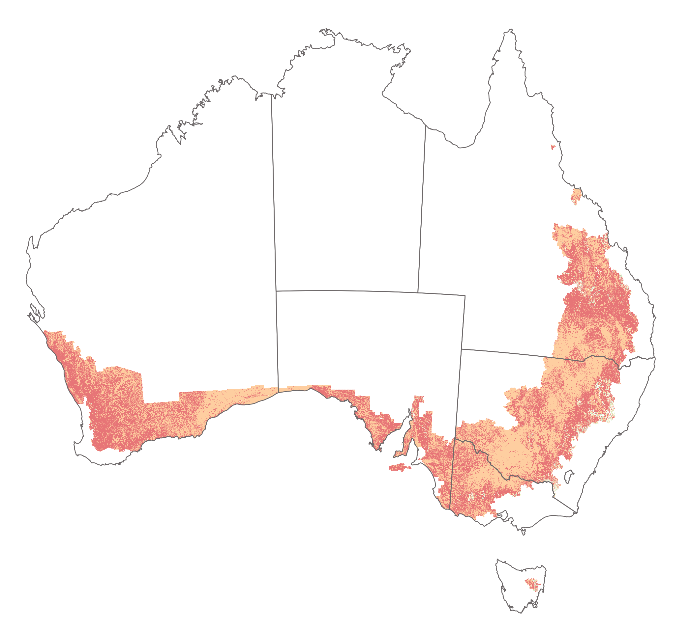
The \(P-\)factor represents the effectiveness of soil conservation or erosion control practices that reduce the erosion potential of runoff. It is defined as the ratio of soil loss with a given support practice to the loss with straight-row farming up-and-down the slope (no practice).
Common support practices include contour plowing, strip cropping, terracing, or subsurface drainage that reduce runoff. These practices work by either slowing runoff flow, promoting infiltration, or shortening slope length via interruptions.
Values for \(P\) are provided in the USLE handbook.
All required packages should already be installed. Should this not be the case, execute the following chunk of code:
# Main spatial packages
install.packages("sf")
install.packages("terra")
# Install the CRAN version of whitebox
install.packages("whitebox")
# For the development version run this:
# if (!require("remotes")) install.packages('remotes')
# remotes::install_github("opengeos/whiteboxR", build = FALSE)
# Install the WhiteboxTools library
whitebox::install_whitebox()
# tidyverse for additional data wrangling
install.packages("tidyverse")
# tmap dev version and leaflet for dynamic maps
install.packages("tmap",
repos = c("https://r-tmap.r-universe.dev",
"https://cloud.r-project.org"))
install.packages("leaflet")Load packages:
library(sf)
library(terra)
library(tidyverse)
library(tmap)
library(leaflet)
# Set tmap to static maps
tmap_mode("plot")Load and initialise the whitebox package:
The following datasets are provided as part of this practical exercise:
Vector data:
bnd_GDA94: an ESRI shapefile containing POLYGON
geometries that represent Australia’s coastline and state and territory
administrative boundaries. The dataset uses a geographic coordinate
system referenced to the EPSG:4283 (GDA94) datum. We will primarily use
this dataset for cropping the rainfall rasters to the extent of the
Australian coastline.Bureau of Meteorology (BOM) rainfall data:
bom_precip_daily_2011.nc: a netCDF-4 file containing
daily precipitation rasters for the year 2011. The data is part of
BOM’s Australian Gridded Climate Data (AGCD) data
product, and can be downloaded from here.
The data has a spatial resolution of 0.05 degrees (approx. 5 km) and
uses a geographic coordinate system referenced to the EPSG:4283 (GDA94)
datum.
bom_precip_daily_2019.nc: a netCDF-4 file containing
daily precipitation rasters for the year 2019. The data is part of
BOM’s Australian Gridded Climate Data (AGCD) data
product, and can be downloaded from here.
The data has a spatial resolution of 0.05 degrees (approx. 5 km) and
uses a geographic coordinate system referenced to the EPSG:4283 (GDA94)
datum.
bom_precip_wet_mean9120.asc: an ESRI ASCII grid file
representing the average precipitation for the wet months (October to
April) for the period between 1991 to 2020 (baseline 30-year
climatology). The data was obtained from the BOM.
It has a spatial resolution of 0.05 degrees (approx. 5 km) and uses a
geographic coordinate system referenced to the EPSG:4283 (GDA94)
datum.
bom_precip_year_mean9120.asc: an ESRI ASCII grid
file representing the average yearly precipitation for the period
between 1991 to 2020 (baseline 30-year climatology). The data was
obtained from the BOM.
It has a spatial resolution of 0.05 degrees (approx. 5 km) and uses a
geographic coordinate system referenced to the EPSG:4283 (GDA94)
datum.
Geoscience Australia digital elevation data:
geodata_dem_9s.tif: a GeoTIFF file representing the GEODATA
9 Second Digital Elevation Model (DEM-9S) Version 3 from
Geoscience Australia. The dataset has a resolution of 9 arc
seconds (approx. 250 m) and uses a geographic coordinate system
referenced to the EPSG:4283 (GDA94) datum.MODIS satellite imagery
FC.v310.MCD43A4.[...].tif: a total of 24 GeoTIFF files
representing monthly fractional land cover data for 2011 and 2019. The
layers were prepares by CSIRO and are available for download here. The data has a
spatial resolution of 500 m and was projected into the EPSG:3577 (GDA94
/ Australian Albers) coordinate reference system.RUSLE K- and P-factor rasters
k_factor_g941.tif: a GeoTIFF file representing the
calculated RUSLE soil erodibility factor (K-factor). The data was
obtained from the Teng et
al. study mentioned above. The data has a spatial resolution of 0.01
degrees (approx. 1 km) and uses a geographic coordinate system
referenced to the EPSG:4283 (GDA94) datum.
p_factor_g941.tif: a GeoTIFF file representing the
calculated RUSLE support practices factor (P-factor). The data was
obtained from the Teng et
al. study mentioned above. The data has a spatial resolution of 0.01
degrees (approx. 1 km) and uses a geographic coordinate system
referenced to the EPSG:4283 (GDA94) datum.
The following block of R code reads in the bnd_GDA94
vector layer and the precipitation data obtained from the BOM.
All data layers are reprojected to EPSG:3577 (GDA94 / Australian
Albers).
# Specify the path to your data
# Vector data
bnd <- "./data/data_rusle/vector/bnd_GDA94.shp"
# Raster data
precip_2011 <- "./data/data_rusle/raster/BOM/bom_precip_daily_2011.nc"
precip_2019 <- "./data/data_rusle/raster/BOM/bom_precip_daily_2019.nc"
precip_wet <- "./data/data_rusle/raster/BOM/bom_precip_wet_mean9120.asc"
precip_year <- "./data/data_rusle/raster/BOM/bom_precip_year_mean9120.asc"
# Read in bnd and projec to EPSG:3577
aus_bnd_gda <- read_sf(bnd)
aus_bnd = st_transform(aus_bnd_gda, crs = "EPSG:3577")
# Read in netCDF files with daily precipitation and project to EPSG:3577
# These will be imported as SpatRaster stacks
daily_p2011_gda <- rast(precip_2011)
crs(daily_p2011_gda) <- "EPSG:4283" # assign CRS
daily_p2011 <- project(daily_p2011_gda,
"EPSG:3577", method = "bilinear",res = 5000)
daily_p2019_gda <- rast(precip_2019)
crs(daily_p2019_gda) <- "EPSG:4283" # assign CRS
daily_p2019 <- project(daily_p2019_gda,
"EPSG:3577", method = "bilinear",res = 5000)
# Read in ESRI ASCII rasters, assign CRS, project and rename
mean_precip_wet_gda <- rast(precip_wet)
crs(mean_precip_wet_gda) <- "EPSG:4283" # assign CRS
mean_precip_wet <- project(mean_precip_wet_gda,
"EPSG:3577", method = "bilinear",res = 5000)
names(mean_precip_wet) <- "precip"
mean_precip_year_gda <- rast(precip_year)
crs(mean_precip_year_gda) <- "EPSG:4283" # assign CRS
mean_precip_year <- project(mean_precip_year_gda,
"EPSG:3577", method = "bilinear",res = 5000)
names(mean_precip_year) <- "precip"
# Print layer information
head(aus_bnd)## class : SpatRaster
## dimensions : 801, 994, 365 (nrow, ncol, nlyr)
## resolution : 5000, 5000 (x, y)
## extent : -2248922, 2721078, -5052873, -1047873 (xmin, xmax, ymin, ymax)
## coord. ref. : GDA94 / Australian Albers (EPSG:3577)
## source(s) : memory
## names : precip_1, precip_2, precip_3, precip_4, precip_5, precip_6, ...
## min values : 0.0000, 0.0000, 0.0000, 0.00000, 0.00000, 0.00000, ...
## max values : 152.0955, 147.9009, 134.5052, 72.17483, 88.99311, 84.24989, ...
## unit : mm, mm, mm, mm, mm, mm, ...
## time (days) : 2011-01-01 to 2011-12-31## class : SpatRaster
## dimensions : 801, 994, 365 (nrow, ncol, nlyr)
## resolution : 5000, 5000 (x, y)
## extent : -2248922, 2721078, -5052873, -1047873 (xmin, xmax, ymin, ymax)
## coord. ref. : GDA94 / Australian Albers (EPSG:3577)
## source(s) : memory
## names : precip_1, precip_2, precip_3, precip_4, precip_5, precip_6, ...
## min values : 0.00000, 0.0000, 0.00000, 0.0000, 0.00000, 0.00000, ...
## max values : 95.90903, 138.9206, 60.38298, 75.9481, 57.15222, 73.39804, ...
## unit : mm, mm, mm, mm, mm, mm, ...
## time (days) : 2019-01-01 to 2019-12-31## class : SpatRaster
## dimensions : 801, 994, 1 (nrow, ncol, nlyr)
## resolution : 5000, 5000 (x, y)
## extent : -2248922, 2721078, -5052873, -1047873 (xmin, xmax, ymin, ymax)
## coord. ref. : GDA94 / Australian Albers (EPSG:3577)
## source(s) : memory
## name : precip
## min value : 43.9901
## max value : 3395.2866## class : SpatRaster
## dimensions : 801, 994, 1 (nrow, ncol, nlyr)
## resolution : 5000, 5000 (x, y)
## extent : -2248922, 2721078, -5052873, -1047873 (xmin, xmax, ymin, ymax)
## coord. ref. : GDA94 / Australian Albers (EPSG:3577)
## source(s) : memory
## name : precip
## min value : 109.2222
## max value : 4346.0293As described above, \(\alpha\) is a spatially variable constant that is calculated using the following equation:
\[\alpha = 0.369 \times \left[1 + 0.098 \times \exp\left(3.26 \times \frac{M_{OCT-APR}}{M_{YEAR}}\right)\right]\]
where \(M_{OCT-APR}\) and \(M_{YEAR}\) are the mean summer (October to
April) and mean annual rainfall, respectively. These datasets were
loaded into R as the mean_precip_wet and
mean_precip_year SpatRaster objects.
The following block of code calculates \(\alpha\) and plots the raster on a map using tmap:
# Calculate alpha using the equation from Lu and Yu (2002) for R0 = 0
alpha = 0.369 * (1 + (0.098 * exp(3.26 * (mean_precip_wet / mean_precip_year))))
# Crop and mask to extent of bnd sf object
bnd_mask <- vect(aus_bnd) # Convert to a terra SpatVector
alpha <- crop(alpha, bnd_mask) # Crop to extent
alpha <- mask(alpha, bnd_mask) # Mask: cells outside the polygon become NA
# Rename layer
names(alpha) <- "alpha"
# Plot on a map using tmap
tm_shape(alpha) +
tm_raster("alpha",
col.scale = tm_scale_continuous(values = "scico.managua"),
col.legend = tm_legend(title = "alpha")) +
tm_layout(frame = FALSE) +
tm_shape(aus_bnd) + tm_borders("black") + # Add a tmap layer for suburb boundaries
tm_scalebar(position = c("left", "top"), width = 10) # Add scalebar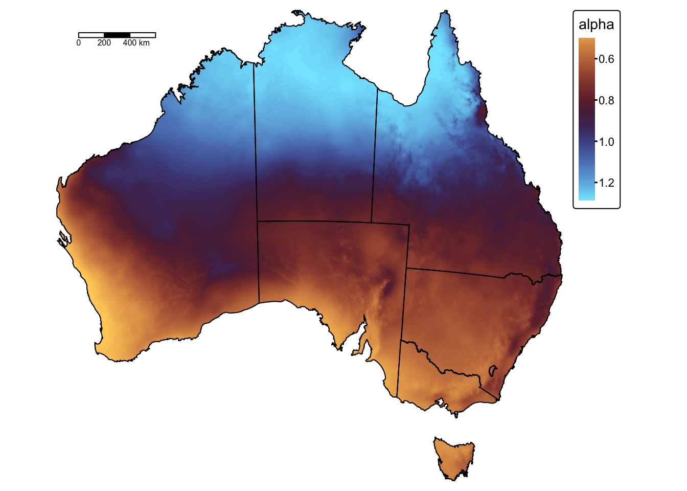
The following R code block processes daily precipitation values —
stored as separate layers for each day of the year — in both the
daily_p2011 and daily_p2019 SpatRaster stacks
by first raising them to the power \(\beta\) (=1.49), and then summing the
resulting \(R^{\beta}\) grids for each
month.
# Set beta value for exponentiation
beta <- 1.49
# For simplicity, assign the SpatRaster stacks for
# daily precipitation data to r1 and r2
r1 <- daily_p2011
r2 <- daily_p2019
# Extract the time component from r1 and r2.
# The time() function retrieves the dates associated with each layer
dates_r1 <- as.Date(time(r1))
dates_r2 <- as.Date(time(r2))
# Format the extracted dates to get the abbreviated month names (e.g., "Jan", "Feb", etc.)
# The factor() function is used to create an ordered factor,
# ensuring the months follow the standard calendar order
months_r1 <- factor(format(dates_r1, "%b"), levels = month.abb)
months_r2 <- factor(format(dates_r2, "%b"), levels = month.abb)
# Raise each layer of the SpatRaster stacks to the power beta
r1_pow <- r1^beta
r2_pow <- r2^beta
# Aggregate the daily layers into monthly sums
# The tapp() function groups layers based on the 'index' provided
# (here, months_r1 amd ,months_r2) and applies the sum function
r1_monthly <- tapp(r1_pow, index = months_r1, fun = sum)
r2_monthly <- tapp(r2_pow, index = months_r2, fun = sum)
# Rename the aggregated monthly layers so that each layer is labelled
# with the correct month abbreviation; This ensures that the output layers
# have clear, meaningful names (e.g., "Jan", "Feb", etc.)
names(r1_monthly) <- levels(months_r1)
names(r2_monthly) <- levels(months_r2)
# Optional: Crop and mask to extent of bnd sf object
r1_monthly <- crop(r1_monthly, bnd_mask) # Crop to extent
r1_monthly <- mask(r1_monthly, bnd_mask) # Mask: cells outside the polygon become NA
r2_monthly <- crop(r2_monthly, bnd_mask) # Crop to extent
r2_monthly <- mask(r2_monthly, bnd_mask) # Mask: cells outside the polygon become NAPlot resulting monthly grids using tmap:
# Define elements and their full names
months <- c("Jan", "Feb", "Mar", "Apr", "May", "Jun",
"Jul", "Aug", "Sep", "Oct", "Nov", "Dec")
full_names_2011 <-
c(Jan = "Jan 2011", Feb = "Feb 2011", Mar = "Mar 2011", Apr = "Apr 2011",
May = "May 2011", Jun = "Jun 2011", Jul = "Jul 2011", Aug = "Aug 2011",
Sep = "Sep 2011", Oct = "Oct 2011", Nov = "Nov 2011", Dec = "Dec 2011")
full_names_2019 <-
c(Jan = "Jan 2019", Feb = "Feb 2019", Mar = "Mar 2019", Apr = "Apr 2019",
May = "May 2019", Jun = "Jun 2019", Jul = "Jul 2019", Aug = "Aug 2019",
Sep = "Sep 2019", Oct = "Oct 2019", Nov = "Nov 2019", Dec = "Dec 2019")
# Set the names for each layer to be used as facet labels.
names(r1_monthly) <- paste0(full_names_2011[months])
names(r2_monthly) <- paste0(full_names_2019[months])
# Create faceted map for 2011 (r1)
tm_shape(r1_monthly) +
tm_raster(col.scale = tm_scale_continuous_sqrt(values = "scico.managua", n = 4),
col.legend = tm_legend(title = expression(paste(sum(R^beta), "[mm]")),
position = tm_pos_out("right", "center")),
col.free = FALSE) + # Add one common legend
tm_shape(aus_bnd) + tm_borders("black") + # Add a tmap layer for suburb boundaries
tm_layout(frame = FALSE,
legend.text.size = 0.7,
legend.title.size = 0.7,
legend.position = c("right", "bottom"),
legend.bg.color = "white",
panel.label.bg.color = 'linen') +
tm_facets(ncol = 4, free.scales = FALSE) # Plot each raster as a facet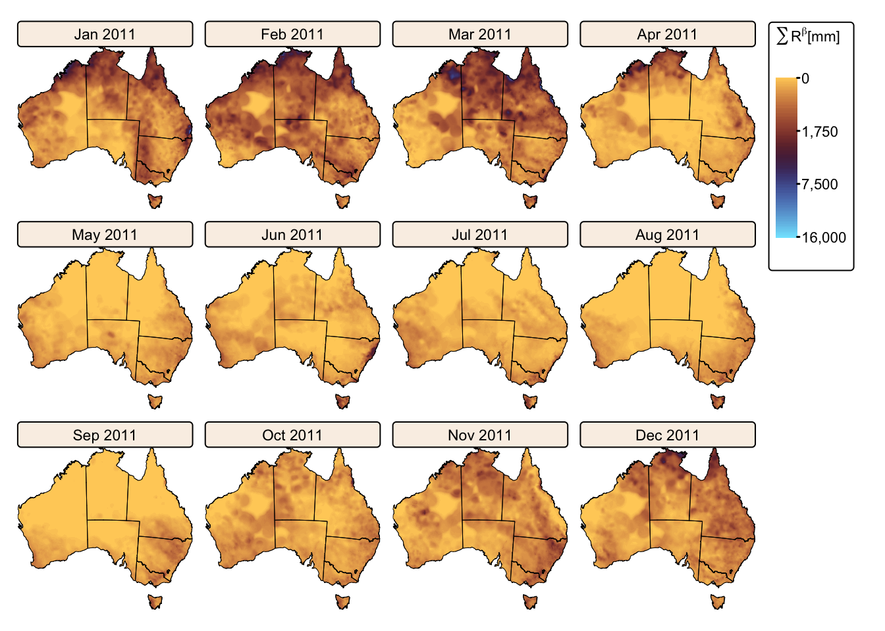
# Create faceted map for 2019 (r2)
tm_shape(r2_monthly) +
tm_raster(col.scale = tm_scale_continuous_sqrt(values = "scico.managua", n = 4),
col.legend = tm_legend(title = expression(paste(sum(R^beta), "[mm]")),
position = tm_pos_out("right", "center")),
col.free = FALSE) + # Add one common legend
tm_shape(aus_bnd) + tm_borders("black") + # Add a tmap layer for suburb boundaries
tm_layout(frame = FALSE,
legend.text.size = 0.7,
legend.title.size = 0.7,
legend.position = c("right", "bottom"),
legend.bg.color = "white",
panel.label.bg.color = 'linen') +
tm_facets(ncol = 4, free.scales = FALSE) # Plot each raster as a facet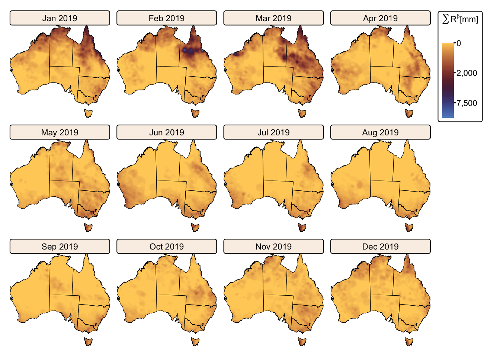
The monthly R-factor (\(R_{i}\)) is calculated using the following equation:
\[R_{i} = \alpha \times W_{i} \times \sum^{N}_{d=1} R^{\beta}_{d}\]
where \(\alpha\) and \(\sum^{N}_{d=1} R^{\beta}_{d}\) were calculated above and values for \(W_{i}\) are provided in Table 2.
The following R code computes \(R_{i}\) by multiplying \(\alpha\) (alpha) with the
summed \(R^{\beta}_{d}\) raster stacks
(r1_monthly and r2_monthly, respectively) and
finally multiplying the result by the corresponding monthly weights
\(W_{i}\).
# Multiply alpha with sum R^beta
r1_monthly_alpha <- r1_monthly * alpha
r2_monthly_alpha <- r2_monthly * alpha
# Define the weights vector in the same order as the layers in the stack
# The values are taken from Table 2
weights <- c(1.290, 1.251, 1.145, 1.000, 0.855, 0.749,
0.710, 0.749, 0.855, 1.000, 1.145, 1.251)
# Multiply each layer by its corresponding weight
# This calculates Ri for each year
ri_2011 <- r1_monthly_alpha * weights
ri_2019 <- r2_monthly_alpha * weightsNow we are ready to calculate the annual rainfall erosivity factor by summing all monthly \(R_{i}\) grids for 2011 and 2019, respectively. The following block of R code also calculates each monthly \(R_{i}\) as a percentage contribution to the total \(R\) value.
# Sum all layers to calculate the yearly R-factor
r_2011 <- sum(ri_2011)
r_2019 <- sum(ri_2019)
names(r_2011) <- "2011 (Wet)"
names(r_2019) <- "2019 (Dry)"
# Calculate the percentage contribution of each month relative to the total
# This divides each month's layer by the total and multiplies by 100
ri_2011_percent <- (ri_2011 / r_2011) * 100
ri_2019_percent <- (ri_2019 / r_2019) * 100Plot total rainfall erosivity rasters for 2011 and 2019 along with monthly values expressed as percentage of annual totals:
# Combine r-factor grids into a SpatRaster stack
r_stack <- c(r_2011, r_2019)
# Create faceted map for yearly R-factor
tm_shape(r_stack) +
tm_raster(col.scale = tm_scale_intervals(values = "scico.managua",
breaks = c(0,1000,2000,5000,10000,15000,42000)),
col.legend = tm_legend(title = "Rainfall erosivity \n[(MJ·mm)/(ha·h·yr)]",
position = tm_pos_out("right", "center")),
col.free = FALSE) + # Add one common legend
tm_shape(aus_bnd) + tm_borders("black") + # Add a tmap layer for suburb boundaries
tm_layout(frame = FALSE,
legend.text.size = 0.7,
legend.title.size = 0.7,
legend.position = c("right", "bottom"),
legend.bg.color = "white",
panel.label.bg.color = 'linen') +
tm_facets(ncol = 2, free.scales = FALSE) # Plot each raster as a facet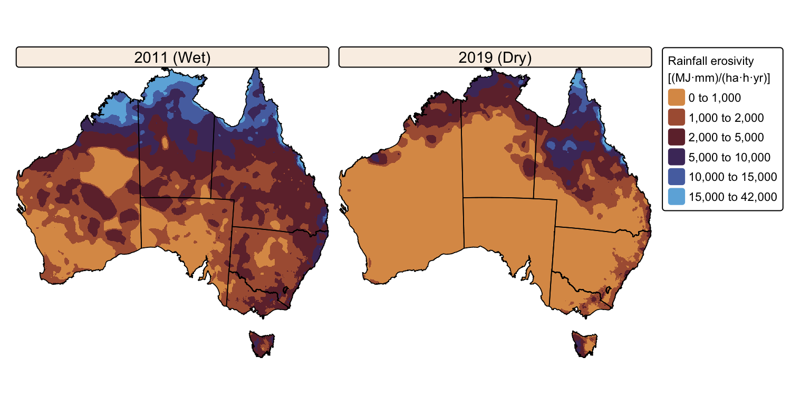
# Create faceted map for monthly R-factor in % (2011)
tm_shape(ri_2011_percent) +
tm_raster(col.scale =
tm_scale_intervals(
values = "scico.managua",
breaks = c(0,5,10,20,50,100)
),
col.legend =
tm_legend(title = "Rainfall erosivity \n[% of annual total]",
position = tm_pos_out("right", "center")
),
col.free = FALSE) + # Add one common legend
tm_shape(aus_bnd) + tm_borders("black") + # Add a tmap layer for suburb boundaries
tm_layout(frame = FALSE,
legend.text.size = 0.7,
legend.title.size = 0.7,
legend.position = c("right", "bottom"),
legend.bg.color = "white",
panel.label.bg.color = 'linen') +
tm_facets(ncol = 4, free.scales = FALSE) # Plot each raster as a facet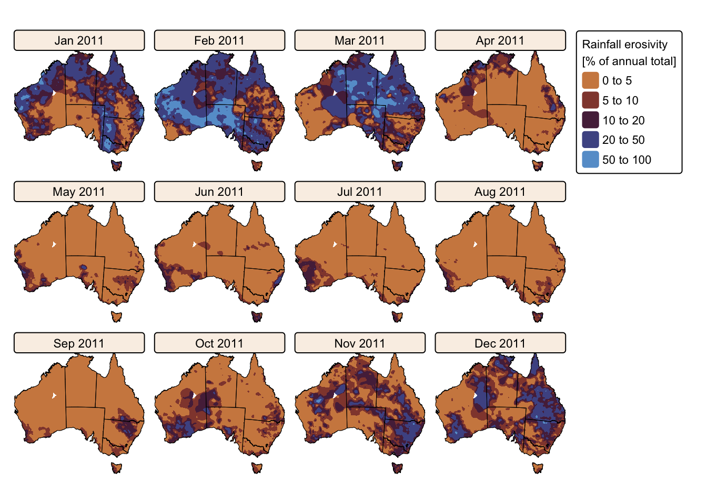
# Create faceted map for monthly R-factor in % (2019)
tm_shape(ri_2019_percent) +
tm_raster(col.scale =
tm_scale_intervals(
values = "scico.managua",
breaks = c(0,5,10,20,50,100)
),
col.legend =
tm_legend(title = "Rainfall erosivity \n[% of annual total]",
position = tm_pos_out("right", "center")
),
col.free = FALSE) + # Add one common legend
tm_shape(aus_bnd) + tm_borders("black") + # Add a tmap layer for suburb boundaries
tm_layout(frame = FALSE,
legend.text.size = 0.7,
legend.title.size = 0.7,
legend.position = c("right", "bottom"),
legend.bg.color = "white",
panel.label.bg.color = 'linen') +
tm_facets(ncol = 4, free.scales = FALSE) # Plot each raster as a facet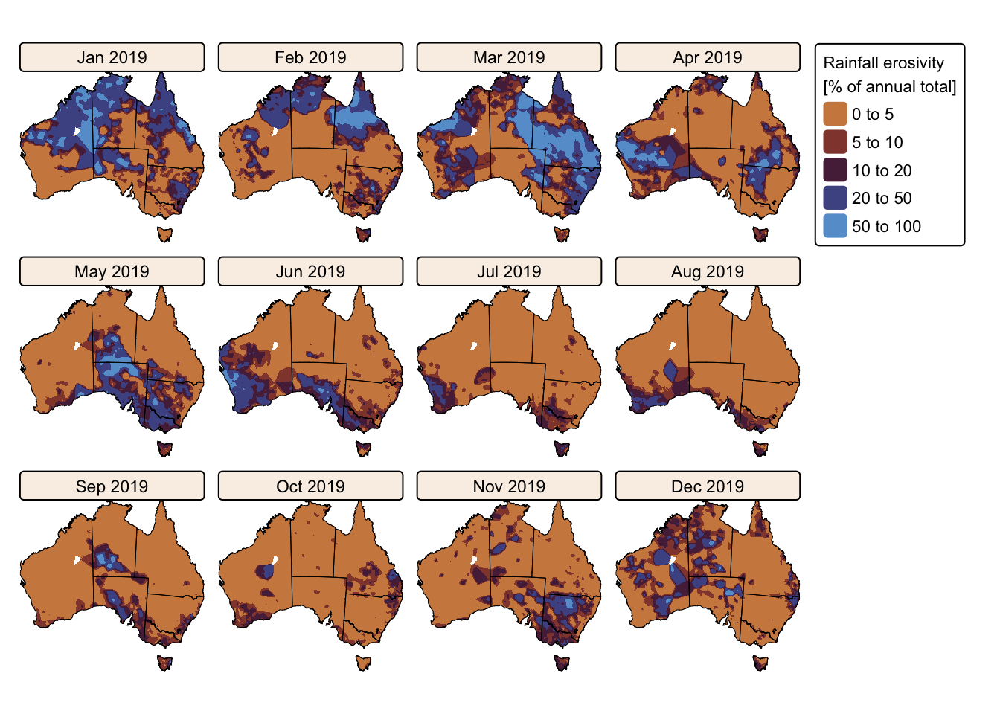
The maps above effectively illustrate the spatial and seasonal variations in Australia’s soil erosivity index for a wetter-than-average (2011) vs. a drier-than-average year (2019). As expected, annual rainfall erosivity values were higher in 2011 than in 2019, and seasonal peaks were observed between October and April.
As described above, \(LS\) is calculated using the following equation:
\[LS = \left(\frac{A}{22.13}\right)^m \times \left(\frac{\sin \beta}{0.0896}\right)^n\]
where, \(A\) is the specific upslope contributing area in metres (i.e., the upslope contributing area divided by the contour length, taken here as the grid resolution), \(\beta\) is slope angle in radians, and \(m\) (between 0.4 to 0.6) and \(n\) (1.3) are constants.
We calculate both specific upslope contributiong are and slope angle
using the GEODATA
9 Second Digital Elevation Model (DEM-9S) from Geoscience
Australia (geodata_dem_9s.tif). The following block of
R code loads this dataset as a SpatRaster and reprojects it to the
EPSG:3577 (GDA94 / Australian Albers) coordinate reference system.
# Read in GEODATA DEM
dem_path <- "./data/data_rusle/raster/GA/geodata_dem_9s.tif"
dem_gda <- rast(dem_path)
# Project to EPSG:3577
# The dataset has a resolution of ~ 250 m
dem_proj <- project(dem_gda, "EPSG:3577", method = "bilinear",res = 250)
# Save projected DEM to disk
writeRaster(dem_proj, "./data/aus_proj_250m.tif", overwrite = TRUE)
# Print layer information
print(dem_proj)## class : SpatRaster
## dimensions : 15985, 18592, 1 (nrow, ncol, nlyr)
## resolution : 250, 250 (x, y)
## extent : -2161418, 2486582, -4937147, -940897.5 (xmin, xmax, ymin, ymax)
## coord. ref. : GDA94 / Australian Albers (EPSG:3577)
## source(s) : memory
## name : dem-9s
## min value : -15.9909
## max value : 2193.8301To calculate the specific upslope contributing area, we will use the hydrological analysis tools available in the WhiteboxTools library.
The following two blocks of R code generate a hydrologically continuous Digital Elevation Model (DEM) by eliminating depressions (sinks). They then compute flow accumulation using the Dinf method (see Practical no 4), with the resulting values expressed in metres.
Remove depressions from DEM:
# Specify input raster
aus_dem <- "./data/aus_proj_250m.tif"
# Specify output rasters
aus_breached_dem <- "./data/aus_breached_250m.tif"
aus_filled_dem <- "./data/aus_filled_250m.tif"
# Breach depressions
# Options:
# dist - maximum search distance for breach paths in cells
# max_cost - optional maximum breach cost (default is Inf)
# min_dist - optional flag indicating whether to minimize breach distances
# flat_increment - optional elevation increment applied to flat areas
# fill - optional flag indicating whether to fill any remaining unbreached depressions
wbt_breach_depressions_least_cost(
dem = aus_dem,
output = aus_breached_dem,
dist = 100
)
# Fill depressions
# Options:
# fix_flats - optional flag indicating if flat areas should have a small gradient applied
# flat_increment - optional elevation increment applied to flat areas
# max_depth - optional maximum depression depth to fill
wbt_fill_depressions(
dem = aus_breached_dem,
output = aus_filled_dem,
fix_flats=TRUE
)Calculate flow accumulation:
# Specify input raster
aus_filled_dem <- "./data/aus_filled_250m.tif"
# Specify output rasters
aus_flow <- "./data/aus_flowacc.tif"
# Dinf flow accumulation
# Options:
# i - input raster DEM or D-infinity pointer file
# o - output raster file
# out_type - one of 'cells', 'sca' (default), and 'ca'
# 'sca' is specific catchment area, which is the upslope contributing area
# divided by the contour length (taken as the grid resolution);
# 'ca' is total catchment area in square-metres
# threshold - optional convergence threshold parameter, in grid cells; default is infinity
# flow-accumulation value above which flow dispersion is no longer permitted;
# flow-accumulation values above this threshold will have their flow routed in a manner
# that is similar to the D8 single-flow-direction algorithm
# log - optional flag to request the output be log-transformed
# clip - optional flag to request clipping the display max by 1%
# pntr - is the input raster a D-infinity flow pointer rather than a DEM?
wbt_d_inf_flow_accumulation(
i = aus_filled_dem,
o = aus_flow,
out_type="sca"
)The following block of R code calculates the slope length factor
(\(L\)) using the above calculated
specific upslope contributing area raster (aus_flowacc.tif)
as \(L = ({A}/{22.13})^m\).
Originally, the RUSLE model was designed for relatively small areas
using high-resolution spatial data. In our application, however, we
extend the model to an entire continent while also utilising a
relatively coarse digital elevation model. Consequently,
aus_flowacc.tif contains exceptionally large specific
upslope contributing area values that bias the calculation of \(L\).
To address this issue, we filter aus_flowacc.tif by
replacing any specific upslope contributing area values exceeding 1000 m
with the value 1 (basically limiting the maximum ‘length’ of a hillslope
to 1 km) . In this way, when \(L\) and
\(S\) are multiplied to produce the
combined slope length and steepness factor (\(LS\)), \(L\) will not bias the result.
# Read in upslope contributing area raster
flow_grid <- "./data/aus_flowacc.tif"
aus_area <- rast(flow_grid)
# Use conditional functions to reclassify:
# - If the value is greater than 1000, assign 1
# - Otherwise, assign original value
aus_area_ifel <- ifel(aus_area > 1000, 1, aus_area)
# Calculate L with m = 0.4
lfactor <- (aus_area_ifel / 22.13)^0.4
lfactor <- crop(lfactor, bnd_mask) # Crop to extent
lfactor <- mask(lfactor, bnd_mask) # Mask: cells outside the polygon become NAPlot the resulting raster using tmap:
# Plot on a map using tmap
tm_shape(lfactor) +
tm_raster(
col.scale = tm_scale_continuous_sqrt(values = "scico.managua"),
col.legend = tm_legend(title = "L-factor")
) +
tm_layout(frame = FALSE) +
tm_shape(aus_bnd) + tm_borders("black") + # Add a tmap layer for suburb boundaries
tm_scalebar(position = c("left", "top"), width = 10) # Add scalebar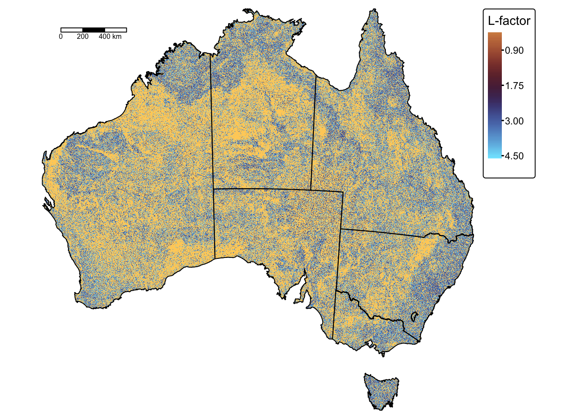
The calculation of \(S\) is fairly
straightforward. The following block of R code calculates slope gradient
using the wbt_slope() function from the WhiteboxTools
library and then calculates the slope steepness factor as \(S = ({\sin \beta}/{0.0896})^n\).
# Specify input raster
aus_dem <- "./data/aus_proj_250m.tif"
# Specify output rasters
aus_slope <- "./data/aus_slope_rad.tif"
# Calculate slope
# Options:
# dem: input raster DEM file
# output: output raster file
# zfactor: optional multiplier for when the vertical and horizontal units are not the same
# units: options include 'degrees', 'radians', 'percent'
wbt_slope(
dem = aus_dem,
output = aus_slope,
units="radians"
)
# Read in slope raster
aus_slp_rad <- rast(aus_slope)
# Calculate S with n = 1.3
sfactor <- (sin(aus_slp_rad) / 0.0896)^1.3
sfactor <- crop(sfactor, bnd_mask) # Crop to extent
sfactor <- mask(sfactor, bnd_mask) # Mask: cells outside the polygon become NAPlot the resulting raster using tmap:
# Plot on a map using tmap
tm_shape(sfactor) +
tm_raster(
col.scale = tm_scale_continuous_sqrt(values = "-met.hokusai1"),
col.legend = tm_legend(title = "S-factor")
) +
tm_layout(frame = FALSE) +
tm_shape(aus_bnd) + tm_borders("black") + # Add a tmap layer for suburb boundaries
tm_scalebar(position = c("left", "top"), width = 10) # Add scalebar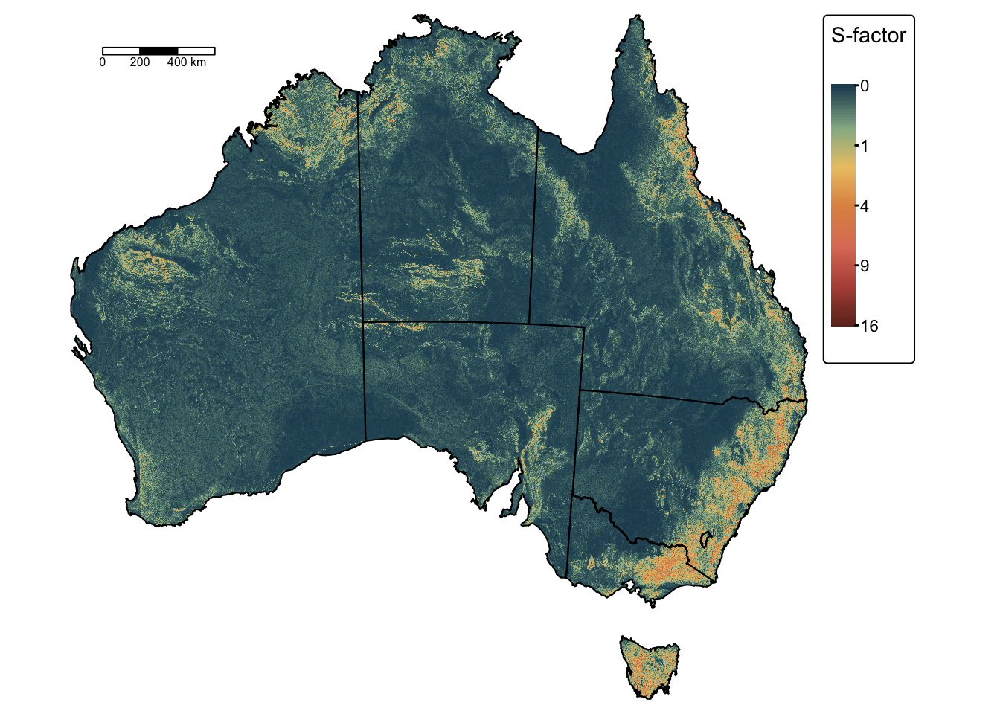
The next block of R code calculates the LS-factor as \(L \times S\) and plots the resulting raster on a map:
# Calculated LS
lsfactor <- lfactor * sfactor
# Plot on a map using tmap
tm_shape(lsfactor) +
tm_raster(
col.scale = tm_scale_intervals(
values = "-met.hokusai1",
breaks = c(0,0.01,0.1,0.2,0.5,1,10,60)
),
col.legend = tm_legend(title = "LS-factor")
) +
tm_layout(frame = FALSE) +
tm_shape(aus_bnd) + tm_borders("black") + # Add a tmap layer for suburb boundaries
tm_scalebar(position = c("left", "top"), width = 10) # Add scalebar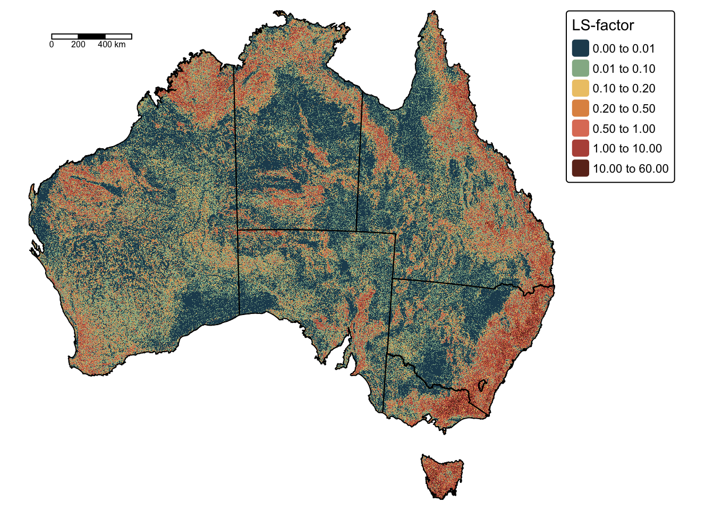
As described above, \(C\) can be calculated from the MODIS Fractional Land Cover dataset using the following equation:
\[C = \sum^{n=12}_{i=1}C_{i}\]
where \(C_{i}\) is the cover and management factor calculated for each month as:
\[C_{i} = \exp(-0.799 - 7.74 \times GC_{i} + 0.0449 \times GC^{2}_{i}) \times R_{i}\]
The only two variables in the above equation are \(GC_{i}\) and \(R_{i}\). The former represents the ground cover in month \(i\) (ranging from 0 to 1) calculated as either \({PV + NPV}\) where \({PV}\) is the percentage of photosynthetic vegetation and \({NPV}\) is the percentage of non-photosynthetic vegetation in each grid cell, or as \({1 - BG}\), where \({BG}\) is the percentage of bare ground in each grid cell. \(R_{i}\) represents the percentage of the annual rainfall erosivity factor that occurs over month \(i\) (values also range from 0 to 1).
MODIS Fractional Land Cover data layers typically comprise three bands: one representing \(PV\) values, one representing \(NPV\) values, and one representing \(BG\) values. However, the MODIS data used here has been pre-processed by the CSIRO to include only a single band, which stores the combined \(PV + NPV\) values.
The following R code blocks read the 24 monthly MODIS fractional land cover rasters and group them into two SpatRaster stacks — one for 2011 and one for 2019. Each raster layer is cleaned up making sure that all values greater than 100 (i.e., \(PV + NPV > 100\%\)) are changed to no data. Each raster is also resampled to match the resolution and extent of the BOM data.
Find and list relevant MODIS data files:
# Define the folder path containing the GeoTiff files
folder_path <- "./data/data_rusle/raster/MODIS"
# List all GeoTiff files starting with "FC.v310.MCD43A4"
files <- list.files(folder_path,
pattern = "^FC\\.v310\\.MCD43A4\\.A\\d{4}\\.\\d{2}\\.",
full.names = TRUE)
# Print list to check if list of files is identified correctly
print(files)## [1] "./data/data_rusle/raster/MODIS/FC.v310.MCD43A4.A2011.01.aust.006.Tot_3577.tif"
## [2] "./data/data_rusle/raster/MODIS/FC.v310.MCD43A4.A2011.02.aust.006.Tot_3577.tif"
## [3] "./data/data_rusle/raster/MODIS/FC.v310.MCD43A4.A2011.03.aust.006.Tot_3577.tif"
## [4] "./data/data_rusle/raster/MODIS/FC.v310.MCD43A4.A2011.04.aust.006.Tot_3577.tif"
## [5] "./data/data_rusle/raster/MODIS/FC.v310.MCD43A4.A2011.05.aust.006.Tot_3577.tif"
## [6] "./data/data_rusle/raster/MODIS/FC.v310.MCD43A4.A2011.06.aust.006.Tot_3577.tif"
## [7] "./data/data_rusle/raster/MODIS/FC.v310.MCD43A4.A2011.07.aust.006.Tot_3577.tif"
## [8] "./data/data_rusle/raster/MODIS/FC.v310.MCD43A4.A2011.08.aust.006.Tot_3577.tif"
## [9] "./data/data_rusle/raster/MODIS/FC.v310.MCD43A4.A2011.09.aust.006.Tot_3577.tif"
## [10] "./data/data_rusle/raster/MODIS/FC.v310.MCD43A4.A2011.10.aust.006.Tot_3577.tif"
## [11] "./data/data_rusle/raster/MODIS/FC.v310.MCD43A4.A2011.11.aust.006.Tot_3577.tif"
## [12] "./data/data_rusle/raster/MODIS/FC.v310.MCD43A4.A2011.12.aust.006.Tot_3577.tif"
## [13] "./data/data_rusle/raster/MODIS/FC.v310.MCD43A4.A2019.01.aust.006.Tot_3577.tif"
## [14] "./data/data_rusle/raster/MODIS/FC.v310.MCD43A4.A2019.02.aust.006.Tot_3577.tif"
## [15] "./data/data_rusle/raster/MODIS/FC.v310.MCD43A4.A2019.03.aust.006.Tot_3577.tif"
## [16] "./data/data_rusle/raster/MODIS/FC.v310.MCD43A4.A2019.04.aust.006.Tot_3577.tif"
## [17] "./data/data_rusle/raster/MODIS/FC.v310.MCD43A4.A2019.05.aust.006.Tot_3577.tif"
## [18] "./data/data_rusle/raster/MODIS/FC.v310.MCD43A4.A2019.06.aust.006.Tot_3577.tif"
## [19] "./data/data_rusle/raster/MODIS/FC.v310.MCD43A4.A2019.07.aust.006.Tot_3577.tif"
## [20] "./data/data_rusle/raster/MODIS/FC.v310.MCD43A4.A2019.08.aust.006.Tot_3577.tif"
## [21] "./data/data_rusle/raster/MODIS/FC.v310.MCD43A4.A2019.09.aust.006.Tot_3577.tif"
## [22] "./data/data_rusle/raster/MODIS/FC.v310.MCD43A4.A2019.10.aust.006.Tot_3577.tif"
## [23] "./data/data_rusle/raster/MODIS/FC.v310.MCD43A4.A2019.11.aust.006.Tot_3577.tif"
## [24] "./data/data_rusle/raster/MODIS/FC.v310.MCD43A4.A2019.12.aust.006.Tot_3577.tif"Extract the year and month for each MODIS data layer:
# Create a data frame with file paths
file_info <- data.frame(file = files, stringsAsFactors = FALSE)
# Define a regex pattern to extract the year (YYYY) and month (MM)
# This pattern matches "FC.v310.MCD43A4.A", then captures 4 digits (year),
# a period, 2 digits (month), and a period.
pattern <- "FC\\.v310\\.MCD43A4\\.A(\\d{4})\\.(\\d{2})\\."
# Extract year and month from each file name
matches <- regmatches(file_info$file, regexec(pattern, file_info$file))
file_info$year <- sapply(matches, function(x) if(length(x) >= 2) x[2] else NA)
file_info$month <- sapply(matches, function(x) if(length(x) >= 3) x[3] else NA)
# Convert extracted year and month to numeric
file_info$year <- as.numeric(file_info$year)
file_info$month <- as.numeric(file_info$month)
# Initialise a list to store SpatRaster stacks by year
raster_stacks <- list()Loop through files and create SpatRaster stacks with processed monthly MODIS data for 2011 and 2019:
# Loop over each unique year to create a SpatRaster stack per year
for (yr in unique(file_info$year)) {
# Subset file_info for the current year and order by month
files_year <- file_info[file_info$year == yr, ]
files_year <- files_year[order(files_year$month), ]
# Initialise a list to store processed layers for the current year
raster_list <- list()
for (i in seq_len(nrow(files_year))) {
# Read the GeoTiff as a SpatRaster
r <- rast(files_year$file[i])
# Reclassify: set values greater than 100 to NA
r[r > 100] <- NA
# Resample the raster to match the extent and resolution of r_2011
r <- resample(r, r_2011)
# Assign the month abbreviation as the name for this layer
names(r) <- month.abb[files_year$month[i]]
# Append the processed raster to the list
raster_list[[i]] <- r
}
# Combine the list of rasters into a SpatRaster stack
raster_stack <- rast(raster_list)
# Ensure the stack's layers are named by the month abbreviations
names(raster_stack) <- month.abb[files_year$month]
# Store the stack in the list using the year as the name
raster_stacks[[as.character(yr)]] <- raster_stack
}
# The 'raster_stacks' list now contains a SpatRaster stack for each year,
# with layers sorted by month.
# Separate the two stacks:
modis_2011 <- raster_stacks[["2011"]]
modis_2019 <- raster_stacks[["2019"]]Plot monthly MODIS rasters using tmap:
# Define elements and their full names
months <- c("Jan", "Feb", "Mar", "Apr", "May", "Jun",
"Jul", "Aug", "Sep", "Oct", "Nov", "Dec")
full_names_2011 <-
c(Jan = "Jan 2011", Feb = "Feb 2011", Mar = "Mar 2011", Apr = "Apr 2011",
May = "May 2011", Jun = "Jun 2011", Jul = "Jul 2011", Aug = "Aug 2011",
Sep = "Sep 2011", Oct = "Oct 2011", Nov = "Nov 2011", Dec = "Dec 2011")
full_names_2019 <-
c(Jan = "Jan 2019", Feb = "Feb 2019", Mar = "Mar 2019", Apr = "Apr 2019",
May = "May 2019", Jun = "Jun 2019", Jul = "Jul 2019", Aug = "Aug 2019",
Sep = "Sep 2019", Oct = "Oct 2019", Nov = "Nov 2019", Dec = "Dec 2019")
# Set the names for each layer to be used as facet labels.
names(modis_2011) <- paste0(full_names_2011[months])
names(modis_2019) <- paste0(full_names_2019[months])
# Create faceted map for 2011
tm_shape(modis_2011) +
tm_raster(col.scale = tm_scale_continuous(values = "scico.bam", n = 4),
col.legend = tm_legend(title = "Land cover \nPV + NPV [%]",
position = tm_pos_out("right", "center")),
col.free = FALSE) + # Add one common legend
tm_shape(aus_bnd) + tm_borders("black") + # Add a tmap layer for suburb boundaries
tm_layout(frame = FALSE,
legend.text.size = 0.7,
legend.title.size = 0.7,
legend.position = c("right", "bottom"),
legend.bg.color = "white",
panel.label.bg.color = 'linen') +
tm_facets(ncol = 4, free.scales = FALSE) # Plot each raster as a facet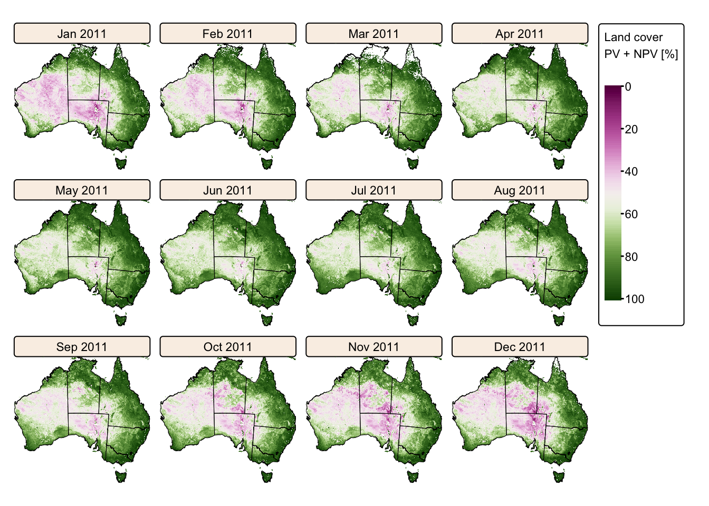
# Create faceted map for 2019
tm_shape(modis_2019) +
tm_raster(col.scale = tm_scale_continuous(values = "scico.bam", n = 4),
col.legend = tm_legend(title = "Land cover \nPV + NPV [%]",
position = tm_pos_out("right", "center")),
col.free = FALSE) + # Add one common legend
tm_shape(aus_bnd) + tm_borders("black") + # Add a tmap layer for suburb boundaries
tm_layout(frame = FALSE,
legend.text.size = 0.7,
legend.title.size = 0.7,
legend.position = c("right", "bottom"),
legend.bg.color = "white",
panel.label.bg.color = 'linen') +
tm_facets(ncol = 4, free.scales = FALSE) # Plot each raster as a facet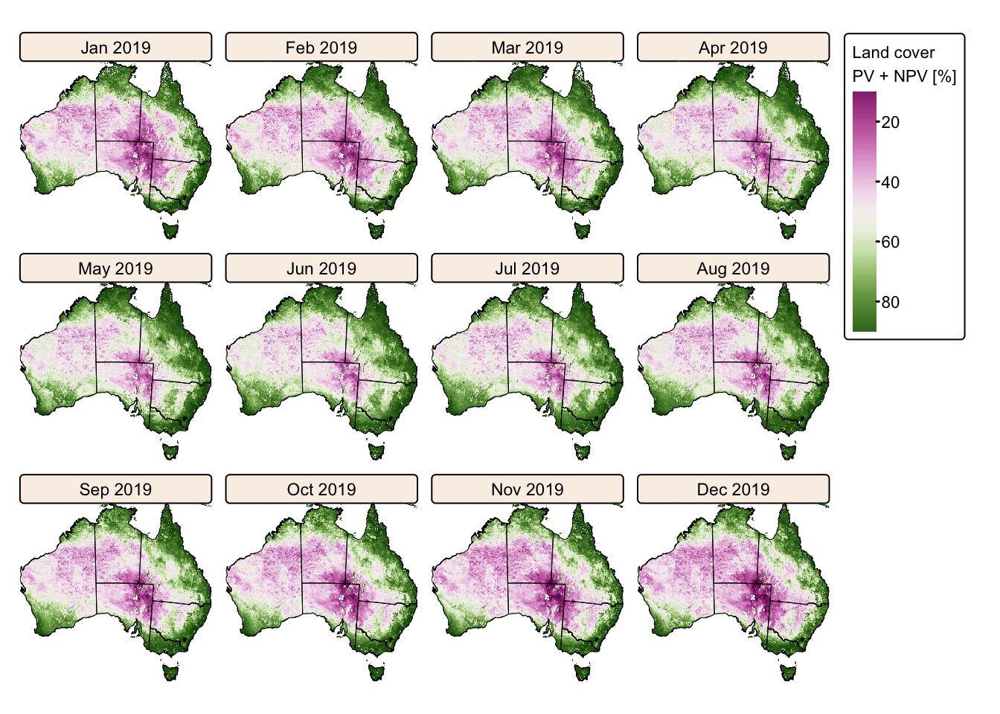
The maps above vividly illustrate the seasonal variations in Australia’s land cover, highlighting the stark contrast between wet and dry years.
The following block of R code calculates the monthly cover and management factor \(C_{i}\):
# Prepare MODIS data by expressing as values from 0 to 1.
modis_2011_corr <- modis_2011 / 100
modis_2019_corr <- modis_2019 / 100
# Prepare R_{i} data by expressing as values from 0 to 1.
ri_2011_corr <- (ri_2011 / r_2011)
ri_2019_corr <- (ri_2019 / r_2019)
# Calculate C_{i}
c_monthly_2011 <-
exp(-0.799 - (7.74 * modis_2011_corr) + (0.0449 * modis_2011_corr^2)) * ri_2011_corr
c_monthly_2019 <-
exp(-0.799 - (7.74 * modis_2019_corr) + (0.0449 * modis_2019_corr^2)) * ri_2019_corr
# Cleanup rasters
# The original MODIS data had areas with no data that we fix here:
# Replace all NA values with 1
c_monthly_2011[is.na(c_monthly_2011)] <- 0
c_monthly_2019[is.na(c_monthly_2019)] <- 0
# Mask: cells outside the polygon become NA
c_monthly_2011 <- mask(c_monthly_2011, bnd_mask)
c_monthly_2019 <- mask(c_monthly_2019, bnd_mask)Plot \(C_{i}\) rasters using tmap:
# Define elements and their full names
months <- c("Jan", "Feb", "Mar", "Apr", "May", "Jun",
"Jul", "Aug", "Sep", "Oct", "Nov", "Dec")
full_names_2011 <-
c(Jan = "Jan 2011", Feb = "Feb 2011", Mar = "Mar 2011", Apr = "Apr 2011",
May = "May 2011", Jun = "Jun 2011", Jul = "Jul 2011", Aug = "Aug 2011",
Sep = "Sep 2011", Oct = "Oct 2011", Nov = "Nov 2011", Dec = "Dec 2011")
full_names_2019 <-
c(Jan = "Jan 2019", Feb = "Feb 2019", Mar = "Mar 2019", Apr = "Apr 2019",
May = "May 2019", Jun = "Jun 2019", Jul = "Jul 2019", Aug = "Aug 2019",
Sep = "Sep 2019", Oct = "Oct 2019", Nov = "Nov 2019", Dec = "Dec 2019")
# Set the names for each layer to be used as facet labels.
names(c_monthly_2011) <- paste0(full_names_2011[months])
names(c_monthly_2019) <- paste0(full_names_2019[months])
# Create faceted map for 2011
tm_shape(c_monthly_2011) +
tm_raster(col.scale = tm_scale_intervals(values = "-scico.bam",
breaks = c(0,0.0005,0.001,0.005,0.01,0.1,0.5)),
col.legend = tm_legend(title = "Monthly C-factor \n[dimensionless]",
position = tm_pos_out("right", "center")),
col.free = FALSE) + # Add one common legend
tm_shape(aus_bnd) + tm_borders("black") + # Add a tmap layer for suburb boundaries
tm_layout(frame = FALSE,
legend.text.size = 0.7,
legend.title.size = 0.7,
legend.position = c("right", "bottom"),
legend.bg.color = "white",
panel.label.bg.color = 'linen') +
tm_facets(ncol = 4, free.scales = FALSE) # Plot each raster as a facet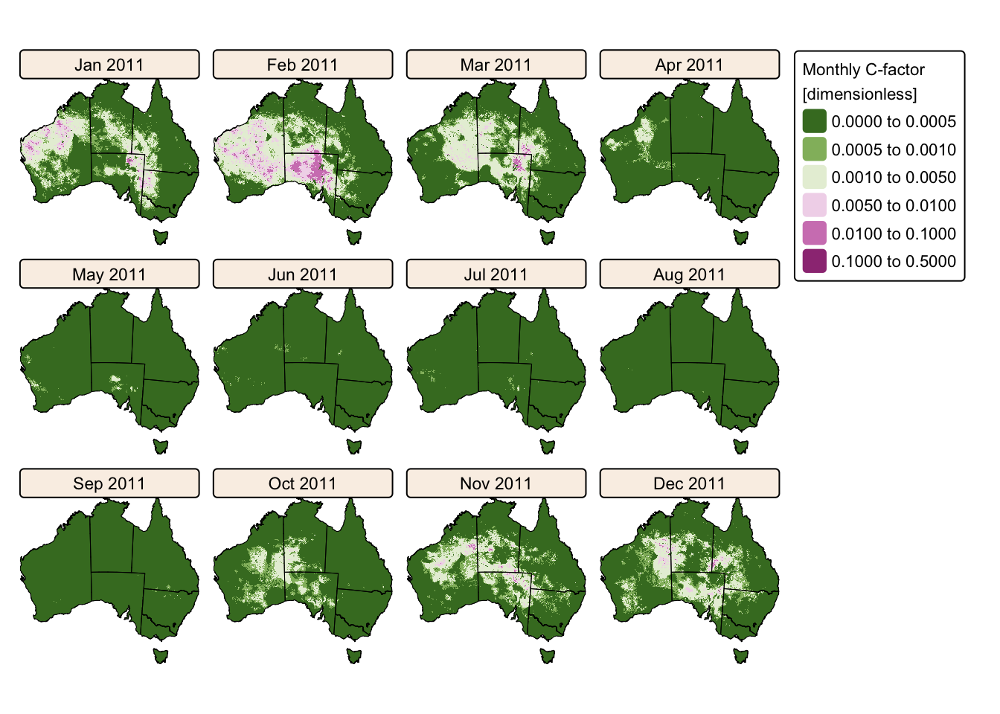
# Create faceted map for 2019
tm_shape(c_monthly_2019) +
tm_raster(col.scale = tm_scale_intervals(values = "-scico.bam",
breaks = c(0,0.0005,0.001,0.005,0.01,0.1,0.5)),
col.legend = tm_legend(title = "Monthly C-factor \n[dimensionless]",
position = tm_pos_out("right", "center")),
col.free = FALSE) + # Add one common legend
tm_shape(aus_bnd) + tm_borders("black") + # Add a tmap layer for suburb boundaries
tm_layout(frame = FALSE,
legend.text.size = 0.7,
legend.title.size = 0.7,
legend.position = c("right", "bottom"),
legend.bg.color = "white",
panel.label.bg.color = 'linen') +
tm_facets(ncol = 4, free.scales = FALSE) # Plot each raster as a facet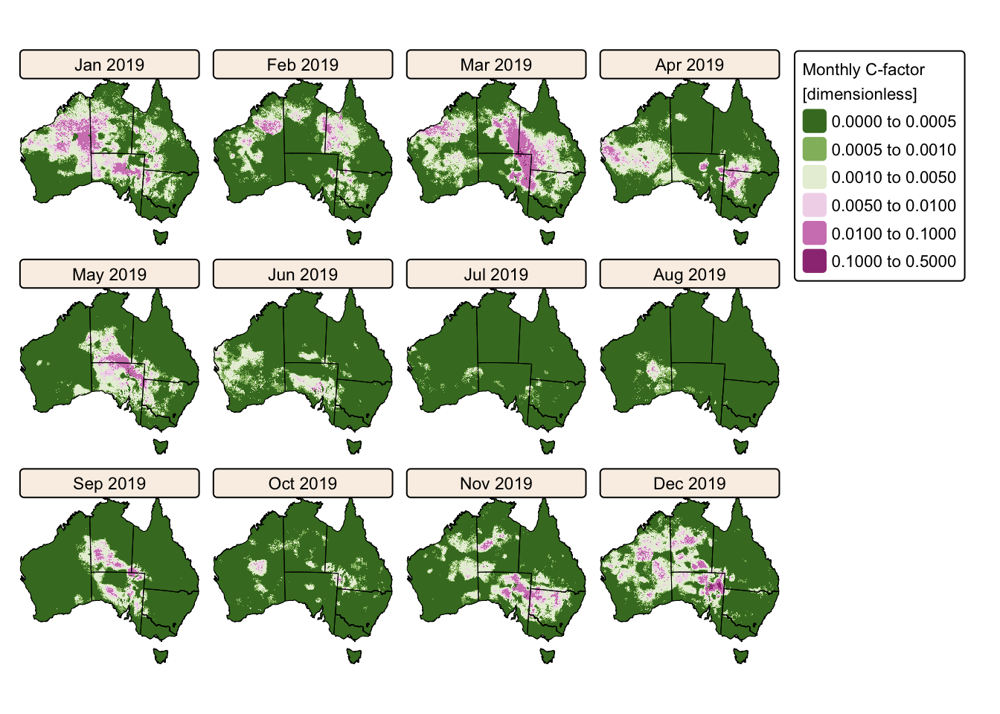
The next block of code calculates the yearly C-factor for 2011 and 2019 by summing \(C_{i}\) for each year:
# Sum all layers to calculate the yearly C-factor
c_2011 <- sum(c_monthly_2011)
c_2019 <- sum(c_monthly_2019)
names(c_2011) <- "2011 (Wet)"
names(c_2019) <- "2019 (Dry)"Plot the yearly C-factor rasters for 2011 and 2019:
# Combine c-factor grids into a SpatRaster stack
c_stack <- c(c_2011, c_2019)
# Create faceted map for yearly C-factor
tm_shape(c_stack) +
tm_raster(col.scale = tm_scale_intervals(values = "-scico.bam",
breaks = c(0,0.0005,0.001,0.005,0.01,0.1,0.5)),
col.legend = tm_legend(title = "Yearly C-factor \n[dimensionless]",
position = tm_pos_out("right", "center")),
col.free = FALSE) + # Add one common legend
tm_shape(aus_bnd) + tm_borders("black") + # Add a tmap layer for suburb boundaries
tm_layout(frame = FALSE,
legend.text.size = 0.7,
legend.title.size = 0.7,
legend.position = c("right", "bottom"),
legend.bg.color = "white",
panel.label.bg.color = 'linen') +
tm_facets(ncol = 2, free.scales = FALSE) # Plot each raster as a facet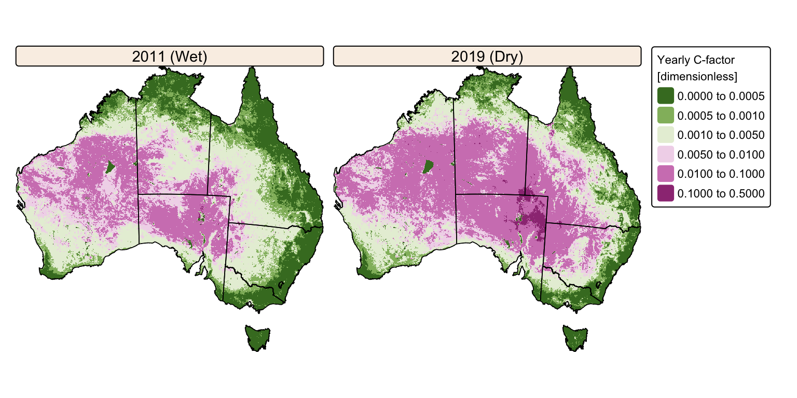
RUSLE estimates average annual soil loss (in t ha⁻¹ yr⁻¹) caused by sheet and rill erosion using the following empirical equation:
\[A = R \times K \times LS \times C \times P\]
where:
Below is a block of code that loads the provided K-, and P-factor rasters and reprojects them to match the CRS of the R-factor rasters (EPSG:3577). Additionally, the code resamples the K-, P-, and LS-factor rasters so they align with the 5 km resolution of the R- and C-factor rasters.
# Provided RUSLE factor rasters
k_rast <- "./data/data_rusle/raster/k_factor_g941.tif"
p_rast <- "./data/data_rusle/raster/p_factor_g941.tif"
# Load rasters
kfactor <- rast(k_rast)
pfactor <- rast(p_rast)
# Assign CRS
crs(kfactor) <- "EPSG:4283"
crs(pfactor) <- "EPSG:4283"
# Project and resample provided RUSLE factor rasters
# We use the 'r_2011' raster as the template for alignment and resolution
kfactor_proj <- project(kfactor, r_2011, method = "bilinear")
pfactor_proj <- project(pfactor, r_2011, method = "bilinear")
# Resample LS-factor raster
# We use the 'r_2011' raster as the template for alignment and resolution
lsfactor_5k <-resample(lsfactor, r_2011, method = "bilinear")Calculate soil loss for 2011 and 2019 by applying the RUSLE equation and plot results with tmap:
# Calculate soil loss as A = R x K x LS x C x P
soil_loss_2011 <- r_2011 * kfactor_proj * lsfactor_5k * c_2011 * pfactor_proj
soil_loss_2019 <- r_2019 * kfactor_proj * lsfactor_5k * c_2019 * pfactor_proj
names(soil_loss_2011) <- "2011 (Wet)"
names(soil_loss_2019) <- "2019 (Dry)"
# Combine grids into a SpatRaster stack
a_stack <- c(soil_loss_2011, soil_loss_2019)
# Create faceted map for soil loss
tm_shape(a_stack) +
tm_raster(col.scale =
tm_scale_intervals(values = "-met.demuth",
breaks = c(0,0.001,0.01,0.1,0.5,1,10,15)
),
col.legend =
tm_legend(title = "Soil loss \n[t/ha/yr]",
position = tm_pos_out("right", "center")
),
col.free = FALSE) + # Add one common legend
tm_shape(aus_bnd) + tm_borders("black") + # Add a tmap layer for suburb boundaries
tm_layout(frame = FALSE,
legend.text.size = 0.7,
legend.title.size = 0.7,
legend.position = c("right", "bottom"),
legend.bg.color = "white",
panel.label.bg.color = 'linen') +
tm_facets(ncol = 2, free.scales = FALSE) # Plot each raster as a facet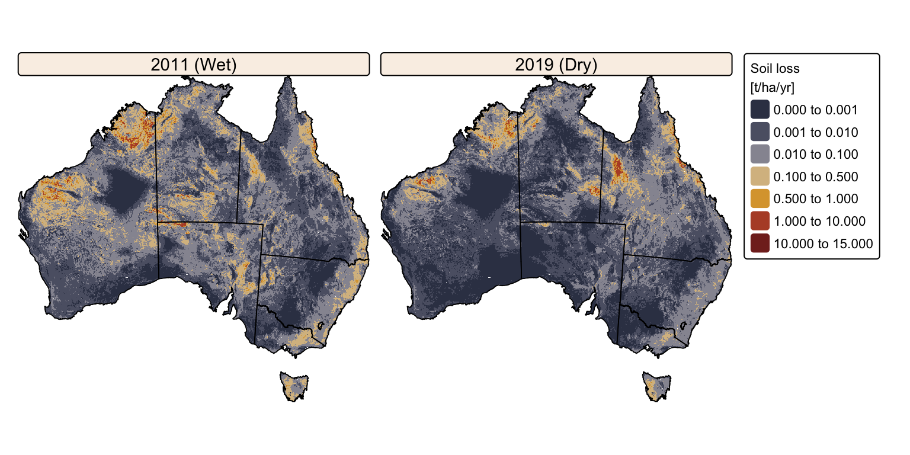
As expected, predicted soil loss is overall higher during the wet year (2011) than the dry year (2019). However, despite the substantial difference in precipitation between these years, the disparity in soil loss is relatively moderate. This is because the heightened rainfall erosivity in wet years is largely counterbalanced by denser vegetation cover that protects the soil. Conversely, in dry years, the reduced rainfall erosivity is offset by sparser vegetation cover, resulting in a less dramatic differences in soil loss.
The following block of R code calculates the difference in predicted
soil loss between 2011 (soil_loss_2011) and 2019
(soil_loss_2019) and plots the resulting raster on map:
# Calculate soil loss as A = R x K x LS x C x P
a_diff <- soil_loss_2011 - soil_loss_2019
names(a_diff) <- "difference"
# Plot on a map using tmap
tm_shape(a_diff) +
tm_raster(
col.scale =
tm_scale_intervals(values = "RdBu", breaks = c(-5,-1,-0.5,-0.1,0,0.1,0.5,1,5)),
col.legend = tm_legend(title = "Difference \n[t/ha/yr]")
) +
tm_layout(frame = FALSE) +
tm_shape(aus_bnd) + tm_borders("darkred") + # Add a tmap layer for suburb boundaries
tm_scalebar(position = c("left", "top"), width = 10) + # Add scalebar
tm_title("Difference in predicted soil loss: Wet-Dry", size = 1)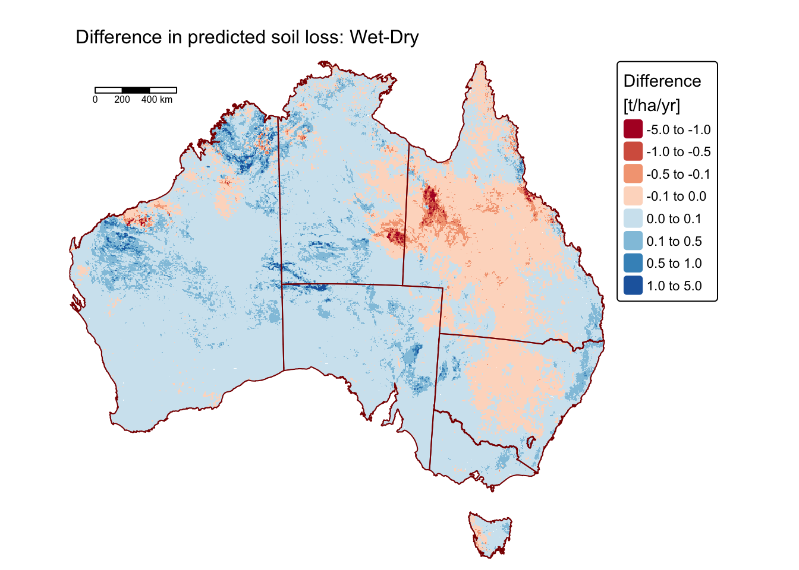
This practical examined how variations in rainfall intensity and frequency affected soil loss potential as modelled by the Revised Universal Soil Loss Equation (RUSLE). We evaluated the sensitivity of soil loss estimates derived from RUSLE in Australia to rainfall variability by comparing scenarios from a wetter-than-average year (2011) and a drier-than-average year (2019). This approach allowed us to investigate how climatic variability could influence soil erosion potential.
Conducting these calculations in R provided valuable experience with key geospatial operations, including data input/output, handling SpatRaster stacks, raster projection and resampling, and spatial analysis workflows. Additionally, this practical experience deepened familiarity with the sf, terra, and whitebox packages, showcasing their effectiveness in managing spatial vector and raster data, performing hydrological analyses, and integrating open-source GIS tools into reproducible workflows.
This practical showcased a diverse range of R functions. A summary of these is presented below:
base R functions
as.character(): converts its input into character
strings. It is often used to ensure that numerical or factor data are
treated as text when needed.
as.Date(): converts character or numeric data into a
Date object using a specified format. It is essential for handling date
arithmetic and comparisons in time‐series analysis.
as.numeric(): converts its argument into numeric
form, which is essential when performing mathematical operations. It is
often used to change factors or character strings into numbers for
computation.
c(): concatenates its arguments to create a vector,
which is one of the most fundamental data structures in R. It is used to
combine numbers, strings, and other objects into a single
vector.
data.frame(): creates a table-like structure where
each column can hold different types of data. It is a primary data
structure for storing and manipulating datasets in R.
exp(): calculates the exponential of a given numeric
value (\(e^{x}\)). It is commonly used
in mathematical computations, growth models, and probability
distributions.
factor(): creates a factor (categorical variable)
from a vector, optionally with a predefined set of levels. Factors are
crucial for statistical modelling and for controlling the ordering of
categories in plots.
format(): converts objects to character strings with
a specified format, particularly useful for dates and numbers. It helps
in standardising the display of data for reporting and
plotting.
head(): returns the first few elements or rows of an
object, such as a vector, matrix, or data frame. It is a convenient tool
for quickly inspecting the structure and content of data.
ifelse(): evaluates a condition for each element of
a vector and returns one value if the condition is true and another if
it is false. This vectorised function simplifies conditional operations
across datasets.
length(): returns the number of elements in a vector
or list. It is a basic utility for checking the size or dimensionality
of an object.
list(): creates an ordered collection that can store
elements of different types and sizes. It is a flexible data structure
that can hold vectors, matrices, data frames, and even other
lists.
list.files(): retrieves a character vector of file
names from a specified directory, with options to match a given pattern
and return full paths. It is essential for automating the process of
file discovery and batch processing.
paste0(): concatenates strings without any
separator, forming a single character string. It is useful for
dynamically generating labels, file names, or messages.
print(): outputs the value of an R object to the
console. It is useful for debugging and ensuring that objects are
displayed correctly within functions.
sin(): computes the sine of an angle provided in
radians. It is a basic trigonometric function used in a variety of
mathematical and statistical computations.
sum(): adds together all the elements in its numeric
argument. It is one of the most straightforward arithmetic functions
used to compute totals.
sf functions
read_sf(): reads spatial data from various file
formats into an sf object. It simplifies the import of geographic data
for spatial analysis.
st_transform(): reprojects spatial data into a
different coordinate reference system. It ensures consistent spatial
alignment across multiple datasets.
terra functions
crs(): retrieves or sets the coordinate reference
system for spatial objects such as SpatRaster or SpatVector. It is
essential for proper projection and alignment of spatial data.
crop(): trims a raster to a specified spatial
extent. It is used to focus analysis on a region of interest within a
larger dataset.
ifel(): performs element-wise conditional operations
on raster data, similar to an if-else statement. It creates new rasters
based on specified conditions.
mask(): applies a mask to a raster using a vector or
another raster, setting cells outside the desired area to NA. It is
useful for isolating specific regions within a dataset.
names(): gets or sets the names of layers within a
SpatRaster object. It facilitates easier reference and manipulation of
individual raster layers.
nrow(): returns the number of rows in a data frame,
matrix, or other two-dimensional object. It provides a quick way to
assess the size of tabular data by counting its rows.
order(): returns the order of the indices that would
sort a vector or a data frame column. It is frequently used to sort data
in a specific order based on one or more variables.
project(): reprojects spatial data from one CRS to
another, enabling alignment of datasets. It is essential for working
with spatial data from different sources.
rast(): creates a new SpatRaster object or converts
data into a raster format. It is the entry point for handling
multi-layered spatial data in terra.
regexec(): searches for a regular expression match
within a character string and returns the starting positions and lengths
of the matches. It is typically used in combination with other functions
to extract specific parts of strings based on a pattern.
regmatches(): extracts the actual substrings that
match a given regular expression from text. It works together with
regexec() to enable flexible and detailed text pattern
extraction.
resample(): changes the resolution or alignment of a
SpatRaster by resampling its values to match a template raster. It
ensures that multiple raster datasets are spatially consistent for
analysis.
sapply(): applies a specified function over a list
or vector and attempts to simplify the result into an array or vector.
It provides an efficient and concise way to perform iterative operations
on each element of a data structure.
seq_len(): generates a sequence of integers from 1
to a specified number. It is particularly useful for creating loops or
iterating over a fixed number of indices.
time(): extracts the time component (dates or
timestamps) from a SpatRaster’s layers. It is particularly useful when
working with time series of raster data, such as daily or monthly
observations.
vect(): converts various data types into a
SpatVector object for vector spatial analysis. It supports points,
lines, and polygons for versatile spatial data manipulation.
unique(): extracts distinct elements from a vector,
data frame, or other R object by removing duplicate entries. It
preserves the order of first occurrences and is useful for identifying
unique values in a dataset.
writeRaster(): writes a raster object to disk in
various file formats, including GeoTIFF. It allows users to export
processed raster data for sharing, further analysis, or use in other
software environments.
tmap functions
tm_borders(): draws border lines around spatial
objects on a map. It is often used in combination with fill functions to
delineate regions clearly.
tm_facets(): arranges multiple maps into facets
based on a grouping variable, enabling side‑by‑side comparisons. It is
particularly useful for exploring differences across categories within a
dataset.
tm_layout(): customises the overall layout of a
tmap, including margins, frames, and backgrounds. It provides fine
control over the visual presentation of the map.
tm_legend(): customises the appearance and title of
map legends in tmap. It is used to enhance the clarity and presentation
of map information.
tm_pos_out(): positions map elements such as legends
or scale bars outside the main map panel. It helps reduce clutter within
the map area.
tm_raster(): adds a raster layer to a map with
options for transparency and color palettes. It is tailored for
visualizing continuous spatial data.
tm_scale_continuous(): applies a continuous color
scale to a raster layer in tmap. It is suitable for representing numeric
data with smooth gradients.
tm_scale_continuous_sqrt(): applies a square root
transformation to a continuous color scale in tmap. It is useful for
visualizing data with skewed distributions.
tm_scale_intervals(): creates a custom
interval-based color scale for a raster layer in tmap. It enhances
visualization by breaking data into meaningful ranges.
tm_scalebar(): adds a scale bar to a tmap to
indicate distance. It can be customised in terms of breaks, text size,
and position.
tm_shape(): defines the spatial object that
subsequent tmap layers will reference. It establishes the base layer for
building thematic maps.
tm_title(): adds a title and optional subtitle to a
tmap, providing descriptive context. It helps clarify the purpose and
content of the map.
tmap_mode(): switches between static (“plot”) and
interactive (“view”) mapping modes in tmap. It allows users to choose
the most appropriate display format for their needs.
whitebox functions
wbt_breach_depressions_least_cost(): removes
depressions (or sinks) in a DEM by identifying least-cost breach paths,
thereby conditioning the DEM for hydrological modelling. It modifies the
elevation data so that water can flow more naturally across the
surface.
wbt_d_inf_flow_accumulation(): calculates flow
accumulation using the D-infinity method via WhiteboxTools. It
allows water to flow in multiple directions, offering a more dispersed
representation of hydrological flow.
wbt_fill_depressions(): fills depressions in a DEM
to eliminate sinks and ensure hydrological connectivity using
WhiteboxTools. It raises the elevation of low-lying cells to a
level that permits continuous flow.
wbt_init(): initialises the WhiteboxTools
environment within R by setting up the necessary configurations and
paths. It must be run before any Whitebox geoprocessing functions are
used.
wbt_slope(): calculates the slope from a digital
elevation model using WhiteboxTools. It outputs a raster that
quantifies the steepness of the terrain, which is essential for various
geomorphological analyses.